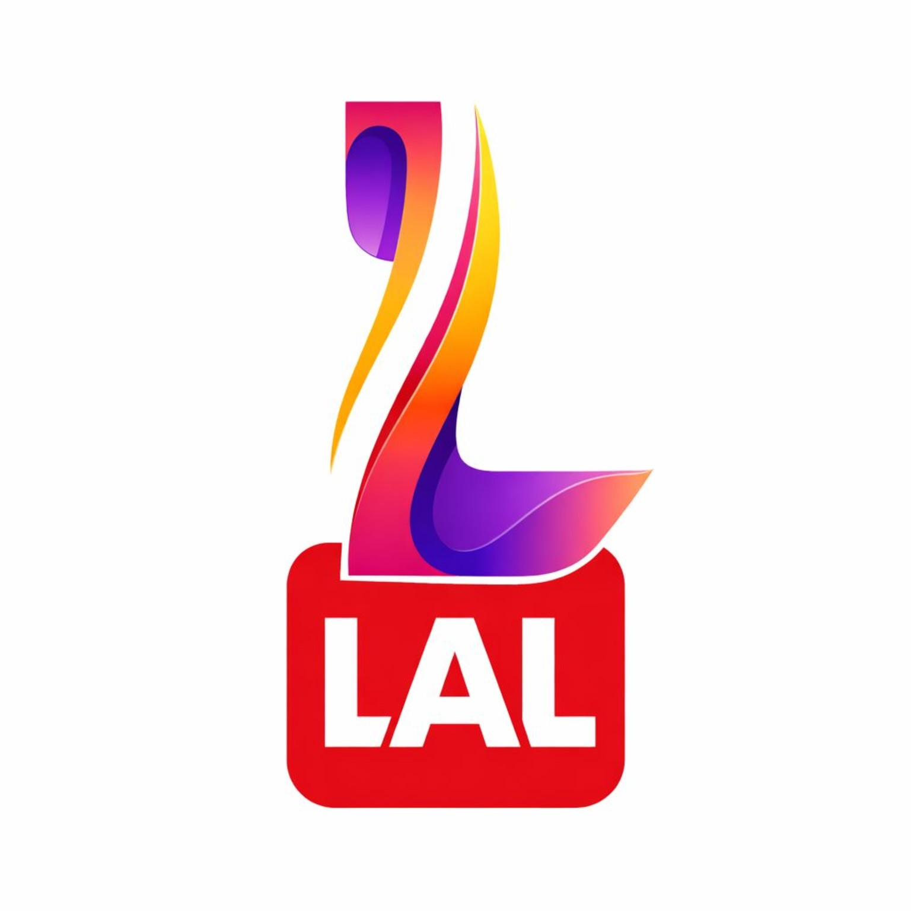

আপনার ভিডিও তৈরি করুন
আপনার ভিডিও নির্বাচন করুন, বাংলা স্ক্রিপ্ট লিখুন এবং পছন্দের কণ্ঠস্বর বেছে নিন।
ভিডিও নির্বাচন করে প্রিভিউ দেখুন। AI ভয়েস ও MP4 তৈরির সুবিধা সার্ভারের সঙ্গে সংযুক্ত করতে হবে।

আপনার ভিডিও নির্বাচন করুন, বাংলা স্ক্রিপ্ট লিখুন এবং পছন্দের কণ্ঠস্বর বেছে নিন।
ভিডিও নির্বাচন করে প্রিভিউ দেখুন। AI ভয়েস ও MP4 তৈরির সুবিধা সার্ভারের সঙ্গে সংযুক্ত করতে হবে।